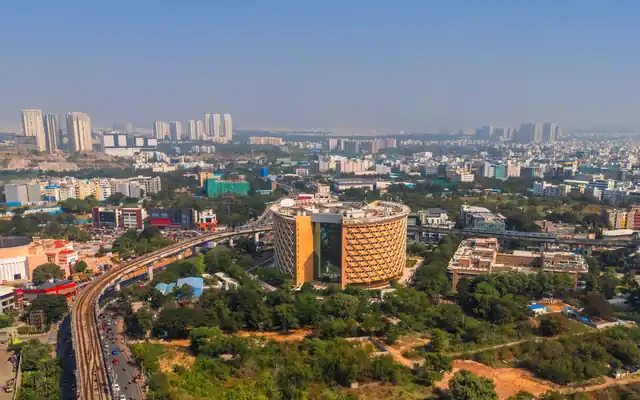
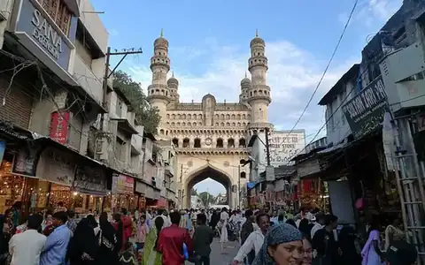

Charminar
Built in 1591, Charminar is Hyderabad's most recognised landmark and a centre of history, culture, markets, and tourism.
Learn moreBuilt in 1591, Charminar is Hyderabad's most recognised landmark and a centre of history, culture, markets, and tourism.
Learn more
HITEC City is a major technology and business district, supporting global companies, startups, innovation, and employment.
Learn moreGolconda Fort reflects the city's royal past and is known for its architecture, acoustics, history, and panoramic views.
Learn moreThis historic lake connects Hyderabad and Secunderabad and offers recreation, public spaces, tourism, and city views.
Learn moreT-Hub supports entrepreneurs and startups through mentoring, investment connections, innovation programmes, and partnerships.
Learn moreOne of the world's largest film studio complexes, offering tourism, entertainment, events, production, and hospitality.
Learn moreThe museum contains art, sculptures, manuscripts, furniture, textiles, and historical objects from around the world.
Learn more
Laad Bazaar is famous for bangles, jewellery, textiles, traditional crafts, local businesses, and the city's market culture.
Learn more